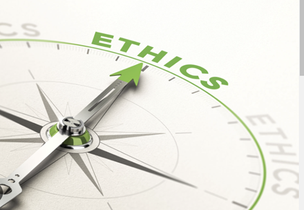
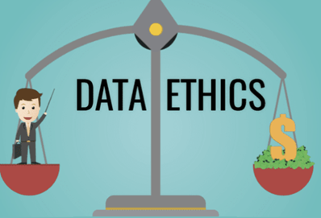
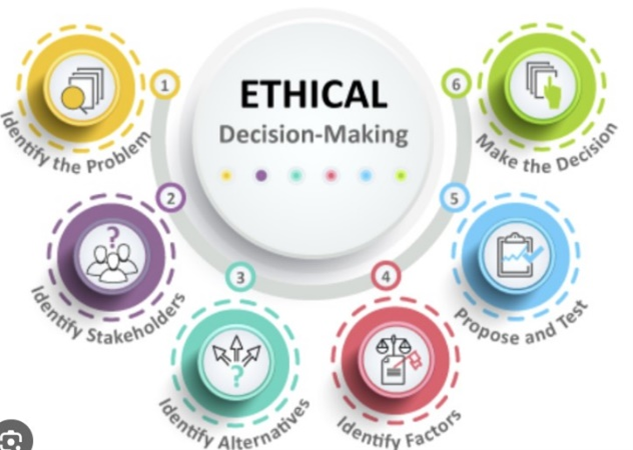

DATA ETHICS:
Data ethics is like creating a moral compass for your business data.
It has become one of the crucial issues within modern information society that largely depends on the availability of data in order for people’s everyday activities to take place or businesses to operate. Data must be handled ethically with consideration of data, privacy, and security to prevent misuse of information that can violate people’s rights or undermine broader community norms.
Why data ethics matters:
1. Builds Trust: Customers, partners, and stakeholders will gain confidence in an organization practicing responsible data handling. Any successful business must have trust as one of its key assets.
2. Reduces Risk: Good data policy in the organization minimizes both the legal and reputational risks that result from the use of data.
3. Fosters Innovation: It is possible to create innovative solutions or generate better user experience by using data ethically.
Ethical Considerations in Data Handling:
1. Privacy: Respecting individuals' privacy is paramount. The collection, storage and usage of the data should be with informed consent, according to applicable laws (GPDR or HIPAA). Data collection should be as minimal as possible towards specific purposes.
2. Security: It is an ethical responsibility of protecting data against illegal data penetration or leakage. Lack of proper security is dangerous to people and businesses
3. Transparency: The use of information should be clear for organizations, inform users on how they utilize it and offer ways to limit such a practice.
4. Fairness: Fairness and neutrality should be observed when using data. It is important to take an active stance against algorithmic bias and discrimination.
5. Accountability: The way in which data is used must be ethically handled by those who manage it. Mechanisms must exist for ensuring that individuals and organizations are accountable.
Common pitfalls to avoid:
1. Disregarding Regulations: Adhering to laws such as the CCPA, GDPR, and HIPAA is often necessary for data ethics. Ignoring these could land you in legal trouble.
2. Lack of Transparency: Customers' trust can be affected if you mislead them or fail to disclose your data practices.
3. Data Hoarding: It may not be ethical to gather more data than you require. Just gather the data needed to meet your company's objectives.
Ethical decision making:
When confronted with a data ethical dilemma, take societal and individual possible effects into account. Consider this:
1. Is the consent and privacy of individuals being respected by this action?
2. Does it prevent discrimination and advance justice?
3. Can we be held accountable for our behaviour and is it transparent?
You can use this information to help you make more moral decisions about data in your company.
Examples of ethical dilemmas:
Monitoring in the Workplace
Dilemma: An employer wants to keep an eye on what employees are doing in the office by using cutting-edge surveillance technologies. They have to determine if this is a privacy violation for the workers.
Ethical Consideration: striking a balance between employee privacy and consent and workplace security.
Scenarios for Ethical Decision-Making:
Customer Data Sharing
Scenario: As a means of increasing sales, your business is thinking about disclosing customer information to outside marketers. Whether to proceed without the express approval of the customer or to request authorization is up to you.
Moral Choice: To protect privacy and openness, obtain express authorization from customers before disclosing their information.